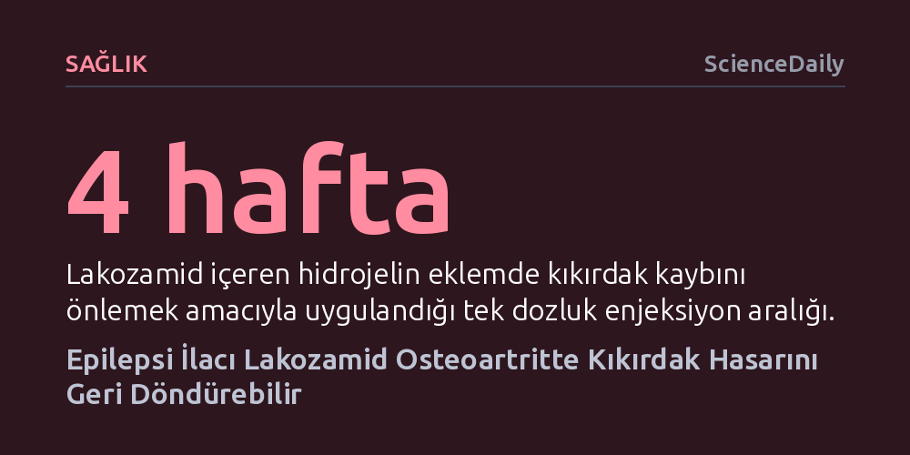

SAGLIK · ScienceDaily · 2026-10-09
Yale Üniversitesi araştırmacıları, epilepsi ilacı lakozamidin osteoartritte yalnızca ağrıyı kesmekle kalmayıp kıkırdak hasarını da tersine çevirebildiğini gösterdi. Isıya duyarlı özel bir hidrojel ile ekleme uygulanan ilaç, kıkırdak yıkımını durdurup doku onarımını doğrudan tetikliyor.
Kireçlenmenin sadece ağrısı dindirilebilen kaçınılmaz bir aşınma olduğu inancını yıkarak kıkırdak kaybının doğrudan tedaviyle tersine çevrilebileceğini gösteriyor.

Osteoartrit (kireçlenme), dünya genelinde milyonlarca insanı etkileyen, eklemlerde sertlik ve şiddetli ağrıyla seyreden kronik bir hastalık. Tıpta uzun süre basit bir "aşınma ve yıpranma" süreci olarak görülen bu tabloda, reçetesiz ağrı kesiciler veya eklem içi steroid enjeksiyonları hastaları yalnızca geçici olarak rahatlatabiliyor. Ancak mevcut yaklaşımların hiçbiri kıkırdak dokusundaki ilerleyen hasarı durduramıyor ve hastalık ilerledikçe hastalar sıklıkla diz protezi ameliyatlarına mecbur kalıyor.
Yale Üniversitesi Tıp Fakültesi araştırmacılarının yayımladığı yeni çalışma, bu çaresiz gidişatı tersine çevirebilecek umut verici bir biyolojik mekanizma ortaya koydu. Bilim insanları, epilepsi tedavisinde uzun yıllardır güvenle kullanılan lakozamid adlı ilacın osteoartritte çifte işlev üstlendiğini belirledi. İlaç, klinik öncesi modellerde yalnızca eklem ağrısını dindirmekle kalmıyor; kıkırdak yıkımını durdurarak hasar görmüş eklemin yeniden doku onarımı evresine geçmesini sağlıyor.
Sağlıklı bir eklemde kondrosit adı verilen hücreler, eski dokuları temizleyip yenilerini üreterek kıkırdak yapısını sürekli bir dengede tutar. Osteoartrit ortaya çıktığında ise bu hassas denge altüst olur; kıkırdak üretilenden çok daha hızlı parçalanır ve koruyucu tabaka tükendikçe kemikler birbirine sürtünmeye başlar. Araştırma ekibi, bu yıkım sürecinin merkezinde Nav1.7 isimli bir sodyum kanalı proteininin bulunduğunu tespit etti.
Nav1.7 uzun yıllar boyunca yalnızca omurilik ve beyne ağrı sinyali ileten sinir hücrelerinin bir parçası olarak görülüyordu. Ancak araştırmacılar, bu proteinin kıkırdak üreten kondrositlerde de yer aldığını ve osteoartritli eklemlerde aşırı aktif hale geldiğini saptadı. Nav1.7 aşırı çalıştığında hem ağrı iletimini şiddetlendiriyor hem de kondrositleri kıkırdak dokusunu parçalamaya zorluyor. Lakozamid bu proteini bloke ettiğinde hem ağrı ileten sinirler yatışıyor hem de kondrositler kıkırdağı yıkmayı bırakıp yeniden onarım moduna geçiyor.
Üstelik lakozamidin bu koruyucu etkisi oldukça hassas bir doz aralığına dayanıyor. Kıkırdak yapımını tetiklemek için ilacın son derece düşük bir yoğunlukta tutulması gerekiyor; doz fazla yükseldiğinde veya düştüğünde bu kazanımlar kayboluyor. İlacın ideal dozda verildiğinde hücrelerde stres yanıtını yöneten HSP70 ve eklem dejenerasyonunu dizginleyen midkin adlı iki koruyucu sinyal proteininin salgılanmasını uyardığı da belirlendi.
Lakozamid ağızdan hap olarak alındığında da olumlu sonuçlar verdi; ancak ilacın tüm vücuda yayılması sistemik yan etki risklerini beraberinde getiriyor. Bu nedenle araştırma ekibi, ilacı doğrudan sorunlu eklemin içine enjekte etme yöntemine odaklandı. Fakat diz ekleminin anatomik yapısı burada büyük bir biyolojik zorluk çıkarıyordu: Eklem sıvısı sürekli yenilendiği için diz adeta delik bir kova gibi çalışıyor ve enjekte edilen sıvı ilaçları birkaç saat içinde dışarı atıyordu.
Bilim insanları bu engeli aşmak için eklem kıkırdağının ana bileşeni olan Tip II kolajenden ısıya duyarlı özel bir hidrojel tasarladı. Soğuk şırınga içindeyken akışkan sıvı formunu koruyan bu hidrojel, eklem içine girip vücut sıcaklığına ulaştığında jölemsi ve dayanıklı bir depoya dönüşüyor. Jel, ilacı eklem boşluğunda sabitleyerek haftalar boyunca yavaş ve kontrollü bir hızla salıyor.
Preklinik deneyler, bu hidrojel sistemiyle dört haftada bir yapılan tek bir enjeksiyonun, her gün ağızdan hap almaktan bile daha üstün bir kıkırdak koruması sağladığını gösterdi. Böylece günlük hap kullanımı yerine ayda bir uygulanan yerel bir tedavi protokolünün yolu açıldı.
Bu çalışmanın sunduğu en kritik avantajlardan biri, lakozamidin halihazırda Amerikan Gıda ve İlaç Dairesi (FDA) onayına sahip olması. Sıfırdan geliştirilen bir ilacın laboratuvardan kliniğe geçişi onlarca yıl ve milyarlarca dolar gerektirirken, güvenlik profili kanıtlanmış bir ilacın yeniden konumlandırılması osteoartrit hastalarında klinik deneylerin hızla başlamasını mümkün kılacak. Üstelik lakozamid daha önce insanlarda Nav1.7 mutasyonuna bağlı sinirsel ağrılarda test edildiği için klinik başarı ihtimali oldukça kuvvetli görülüyor.
Gelişmiş biyomalzemeleri onaylı ilaçlarla buluşturan bu strateji, eklem hastalıklarında semptomatik tedaviden yapısal tedaviye geçişin kapısını aralıyor. Araştırmanın başyazarı Chuan-Ju Liu bu yaklaşımı, "Hedefimiz semptomları kontrol altında tutmanın ötesine geçip hastalığın seyrini gerçekten değiştirmek" sözleriyle özetliyor. İnsan deneylerinde doğrulanması halinde bu tedavi, hastaları bağımlılık yapıcı ağrı kesicilerden ve protez ameliyatlarından kurtarabilir.